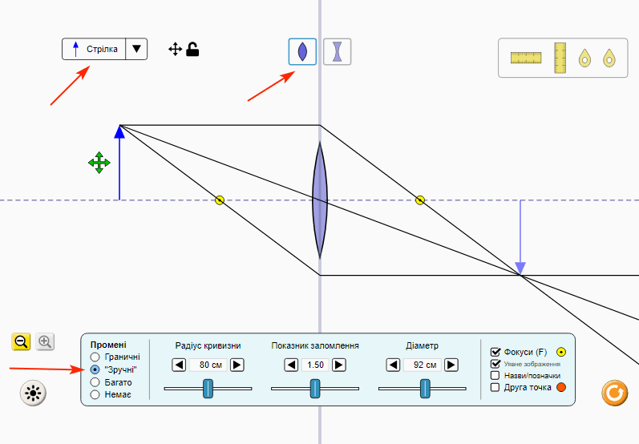
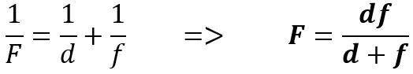
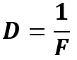

1. Натисніть кнопку «Лінзи». Встановіть наступні параметри:
Стрілка. Збиральна лінза. Промені зручні. (див. рис.)

2. Розташувавши лінзу між джерелом світла та екраном, дістаньте на екрані чітке зменшене зображення джерела
світла.
3. Виміряйте відстань d від джерела світла до лінзи та відстань f від лінзи до екрана.
Результати вимірювань записуємо до таблиці
4. Пересуваючи лінзу, дістаньте на екрані чітке збільшене зображення джерела світла.
5. Знову виміряйте відстань d від джерела світла до лінзи та відстань f від лінзи до екрана.
Опрацювання результатів експерименту
1. Для кожного досліду визначте:
1) фокусну відстань лінзи (скориставшись формулою тонкої лінзи);

2) оптичну силу лінзи (скориставшись означенням оптичної сили).

Запишіть отримані значення до таблиці.
№
Відстань від предмета до лінзи d, м
Відстань від лінзи до екрана f, м
Фокусна відстань лінзи F, м
Оптична сила лінзи D, дптр
1
2
Аналіз експерименту та його результатів
Проаналізуйте експеримент і його результати. Сформулюйте висновок, у якому зазначте:
1) порівняйте значення фокусної відстані, одержані вами в різних дослідах;
2) дізнайтесь у вчителя значення оптичної сили лінзи, наведене в паспорті, та порівняйте його зі значеннями
оптичної сили, отриманими в ході експерименту;
3) зазначте причини можливої розбіжності результатів.